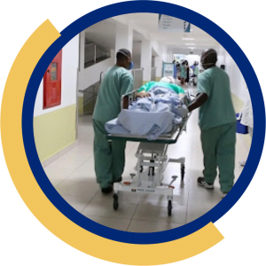
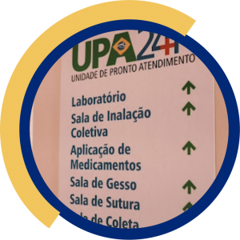
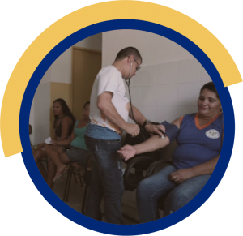

AULA 25
ATENÇÃO ÀS URGÊNCIAS
AULA 25
ATENÇÃO ÀS URGÊNCIAS
Olá, bem vindo(a) de volta!
Você sabe diferenciar urgência de emergência?
Nesta aula, você entenderá sobre situações que exigem respostas rápidas e integradas da Rede de Atenção à Saúde (RAS) na procura diária por atendimentos nas unidades e serviços de saúde, pressionada por eventos agudos e/ou pela agudização de condições crônicas.
Vamos refletir, também, sobre as causas externas, as violências, as doenças crônicas não transmissíveis e as doenças infecciosas, caracterizadas pela tripla carga de doenças, que exigem a implementação de uma Rede de Atenção às Urgências.
Siga para conhecer os objetivos dessa aula interativa!
OBJETIVOS DE APRENDIZAGEM
Ao final desta aula, você será capaz de:
- Identificar os componentes da Rede de Atenção às Urgências;
- Compreender a importância da organização do cuidado e da resposta aos eventos agudos;
- Estimular a participação no processo de planejamento e operacionalização da Rede de Atenção às Urgências no espaço regional.
Conheça o roteiro para esta aula
Caro(a) Aluno(a), pensar na organização do cuidado aos eventos agudos ou às condições crônicas agudizadas exige uma aproximação dos conceitos vigentes e de como estes podem e/ou devem contribuir na definição de respostas sociais para seu enfrentamento.
Ocorrência imprevista de agravo à saúde, com ou sem risco potencial de vida, cujo portador necessita de assistência médica imediata.
Constatação médica de condições de agravo à saúde que implicam em risco iminente de vida ou sofrimento intenso, exigindo, portanto, tratamento médico imediato.
Le Coutour sugere uma perspectiva ampliada, explicitando que o conceito de urgência se difere em função de quem a percebe ou sente.
Clique sobre as palavras para entender essas diferenças.
Para os usuários e seus familiares, pode estar associada a uma ruptura de ordem do curso da vida. É do imprevisto que tende a vir a urgência: “eu não posso esperar”.
Para o médico, a noção de urgência repousa não sobre a ruptura, mas sobre o tempo, relacionado com o prognóstico vital em certo intervalo: “ele não pode esperar”.
Para as instituições, a urgência corresponde a uma perturbação de sua organização, é “o que não pode ser previsto”.
A Rede de Atenção às Urgências, como rede complexa e que atende a diferentes condições (clínicas, cirúrgicas, obstétricas, traumatológicas, em saúde mental etc.), é composta por diferentes pontos de atenção, de forma a dar conta das diversas ações necessárias ao atendimento às situações de urgência.
Desse modo, é necessário que seus componentes atuem de forma integrada, articulada e sinérgica. Além disso, de forma transversal a todos os componentes, devem estar presentes o acolhimento, a qualificação profissional, a informação e a regulação de acesso.
A seguir, você vai conhecer os Componentes da Rede de Atenção às Urgências.
Clique sobre o sinal de “mais” para conhecer os Componentes da Rede de Atenção às Urgências.
Este componente tem por objetivo estimular e fomentar o desenvolvimento de ações de saúde e educação permanente voltadas para a vigilância e a prevenção das violências e dos acidentes, das lesões e mortes no trânsito e das doenças crônicas não transmissíveis;, além de ações intersetoriais, de participação e mobilização da sociedade para a promoção da saúde, prevenção de agravos e vigilância em saúde.
Tem como objetivos a ampliação do acesso, o fortalecimento do vínculo, a responsabilização e o primeiro atendimento às urgências em ambiente adequado, até a transferência/encaminhamento dos pacientes a outros pontos de atenção, quando necessário, mediante implantação de acolhimento com classificação de riscos e vulnerabilidades.
O SAMU é o componente que objetiva ordenar o fluxo assistencial e disponibilizar atendimento precoce e transporte adequado, rápido e resolutivo às vítimas acometidas por agravos à saúde de natureza clínica, cirúrgica, obstétrica, traumática e psiquiátrica, mediante o envio de veículos tripulados por equipe capacitada. É acessado pelo número 192 e acionado por uma Central de Regulação das Urgências, reduzindo a morbimortalidade.

A Central de Regulação Médica de Urgências é parte integrante do SAMU 192, definida como uma estrutura física com a atuação de profissionais médicos, telefonistas auxiliares de regulação médica (TARM) e rádio operadores (RO) capacitados em regulação dos chamados telefônicos que demandem orientação e/ou atendimento de urgência. Atua por meio de uma classificação e priorização das necessidades de assistência em urgência, e ordena o fluxo efetivo das referências e contrarreferências dentro da RAS.
Define-se por Sala de Estabilização o equipamento de saúde que deverá atender às necessidades assistenciais de estabilização do paciente grave/crítico em municípios de grandes distâncias e/ou isolamento geográfico, bem como lugares de difícil acesso considerados como vazios assistenciais para a urgência.

As Unidades de Pronto Atendimento 24h são estruturas de complexidade intermediária entre as Unidades Básicas de Saúde, Unidades de Saúde da Família e a Rede Hospitalar. Devem funcionar 24 horas por dia, todos os dias da semana, proporcionando a continuidade do tratamento com impacto positivo no quadro de saúde individual e coletivo da população.

O Componente Hospitalar tem como objetivos organizar a atenção às urgências nos hospitais, de modo que atendam à demanda espontânea e/ou referenciada e funcionem como retaguarda para os outros pontos de atenção às urgências de menor complexidade; além de garantir a atenção hospitalar nas linhas de cuidado prioritárias, em articulação com os demais pontos de atenção.
Conjunto de ações de promoção à saúde, prevenção e tratamento de doenças e reabilitação prestadas em domicílio, com garantia de continuidade de cuidados e integrada à RAS. Tem como objetivo a reorganização do processo de trabalho das equipes que prestam cuidado domiciliar, para a humanização da atenção à saúde, a redução da demanda por atendimento hospitalar e/ou a redução do período de permanência de usuários internados.
A FN-SUS é estruturante para a Rede de Atenção às Urgências. Sob gestão do Ministério da Saúde, é organizada na lógica de aglutinar esforços para garantir a integralidade da assistência em situações de risco ou emergenciais a que esteja exposta a população brasileira e, especialmente, os povos indígenas e grupos populacionais localizados em território de difícil acesso, devendo conduzir suas atividades segundo os princípios de equidade, integralidade e universalidade.
Créditos da imagem: https://agenciabrasil.ebc.com.br/saude/noticia/2021-03/forca-nacional-do-sus-foi-enviada-mg-e-sc-para-combate-covid-19
Vamos refletir um pouco mais:
Conhecer os componentes da Rede de Atenção às Urgências é o suficiente para que a RAS se organize?
Não!
Para além da resposta assistencial e social em tempo oportuno para os quadros agudos, o gestor municipal deve compreender os principais determinantes desses eventos, por meio de uma análise de situação de saúde, identificando riscos e vulnerabilidades e acionando os recursos necessários ao seu enfrentamento, estimulando, assim, a formulação de políticas públicas intersetoriais que possam impactar a população, dentre as quais se destacam aquelas relacionadas às causas externas e às violências.
É aqui que se insere o Componente Promoção, Prevenção e Vigilância em Saúde.
Conhecer o território, como ele se organiza, como as pessoas vivem, produzem e se relacionam possibilita antecipar ações que poderão impactar positivamente na redução de quadros agudos e identificar fragilidades no cuidado que contribuem e/ou determinam a agudização de usuários com condições crônicas, gerando demanda que excede a capacidade de resposta dos serviços de saúde, produzindo mais dor e sofrimento.
A Unidade Básica de Saúde deve organizar o acesso do usuário por meio do acolhimento e classificação de risco, definindo a necessidade e o grau de prioridade das intervenções para os quadros agudos, respondendo às demandas de menor complexidade e referenciando para os demais pontos de atenção os quadros que exigem respostas dependentes de maior densidade tecnológica, oportunizando uma melhor assistência e maior garantia de continuidade do cuidado.
Quando acolhemos o usuário, afirmamos a ele que está sob nossa responsabilidade e que faremos o que for mais adequado para cuidar de sua vulnerabilidade. Por vezes, o melhor a ser feito não é colocá-lo na fila de espera do atendimento de urgência, mas garantir uma atenção mais imediata em outra unidade da rede, particularmente naquela a qual ele já está vinculado territorialmente e, muitas vezes, afetivamente.
Ampliar a capacidade de resposta da Atenção Básica passa pela discussão de novas formas de se organizar o cuidado, reconhecendo os determinantes sociais em saúde, qualificando os trabalhadores, ampliando o horário de funcionamento, aportando apoio diagnóstico e assistência farmacêutica, e integrando a Unidade de Saúde à Rede de Atenção às Urgências por meio de Regulação Médica e de Transporte Sanitário oportuno.
Produzir cuidado em rede exige do gestor municipal articulação com diversos atores do espaço regional ampliado, uma vez que grande parte dos municípios brasileiros não possui em seu território os demais pontos de atenção necessários à conformação da Rede de Atenção às Urgências.
Destaca-se a importância da Central de Regulação Médica de Urgências como potencial organizador do funcionamento da rede, garantindo escuta permanente e acolhimento dos pedidos de socorro, estabelecendo uma estimativa inicial do grau de urgência e desencadeando a resposta mais adequada e equânime a cada solicitação, considerando os serviços disponíveis previstos na grade de referência previamente pactuada.
É importante termos clareza de que a Rede de Atenção às Urgências deve se concretizar no espaço regional ampliado, e este desafio não é fácil de ser superado, uma vez que envolve múltiplos atores com interesses e prioridades distintas. O estabelecimento de pactos federativos por meio da determinação de objetivos comuns é o caminho que se apresenta como possível para a organização da RAS, explicitando os compromissos assumidos e as responsabilidades compartilhadas na implementação do Plano de Ação Regional – PAR.
Estamos quase finalizando nossos estudos, mas antes é importante refletirmos que organizar respostas por meio de ações e serviços de saúde, de forma integrada e em rede, exige do gestor municipal de saúde a capacidade de planejar, e coloca o diálogo e o estabelecimento de consensos como fatores determinísticos do sucesso na implementação de uma rede de cuidados capaz de responder de forma adequada às demandas e à pressão exercida pelas condições agudas.
Toda a organização da RAS impacta nas respostas produzidas pelos diferentes pontos de atenção, uma vez que o enfrentamento das situações de urgência e de suas causas requer não apenas a assistência imediata, mas inclui também ações de promoção da saúde e prevenção de doenças e agravos, o tratamento contínuo das doenças crônicas, a reabilitação e os cuidados paliativos.
Parabéns, você concluiu mais uma aula!
Vimos aqui sobre a Rede de Atenção às Urgências, e que implementar este tipo de rede depende da articulação entre equipes e equipamento de saúde, além da pactuação entre as três esferas de gestão. Além disso, conhecemos os componentes de Rede de Atenção às Urgências e entendemos que, para a rede dar conta de atender os casos que surgem no cotidianos do SUS, esses componentes precisam atuar de forma ajustada.
Vimos, também, que a articulação e o planejamento regional são fundamentais para o sucesso da Rede de Atenção à Saúde e da linha do cuidado de Urgência.
No AVA, em Material Complementar, você vai encontrar o Fascículo desta aula, com conteúdos exclusivos! E lembre-se SEMPRE de assistir à teleaula!
Nos encontramos na Aula 26, onde estudaremos SAÚDE MENTAL E APOIO PSICOSSOCIAL. Até lá!
Banco de Imagens Freepik
https://www.freepik.com
Banco de Ícones
https://www.flaticon.com/br
Banco de Imagens CONASEMS

Ficha Técnica
Curadoria Conasems: Cristiane Martins Pantaleão, Denise Rinehart, Marcos da Silveira Franco, Nilo Bretas Junior.
Conteudista CONASEMS: Rubens Griep.
Gestão Educacional CONASEMS: Cristina Crespo, Rubensmidt Riani, Valdívia Marçal.
Curadoria de Conteúdos – Ministério da Saúde: Teresa Maria Passarella.
Curadoria de Conteúdos – Faculdade SUPREMA: Claudileia Paiva, Célia Regina Machado Saldanha, Rodrigo Almeida, Rogério Pinheiro Nunes, Simone Ferreira de Assis.
Coordenação Administrativa SUPREMA: Rodrigo Coelho Almeida.
Gestora Educacional: Simone Ferreira de Assis.
Apoio Técnico: Célia Regina Machado Saldanha, Rodrigo Almeida, Rogério Pinheiro Nunes.
Designer Instrucional: Carla Cristini Justino de Oliveira, Kenya Maciel.
Web Desenvolvedor: Aidan Bruno.
Revisão Textual: Bianca Maciente Colvara.
Coordenação Executiva Geral: Conexões Consultoria em Saúde Ltda.


Este material foi elaborado e desenvolvido pela equipe técnica e pedagógica do CONASEMS em parceria com a Faculdade de Ciências Médicas e da Saúde de Juiz de Fora – Suprema.